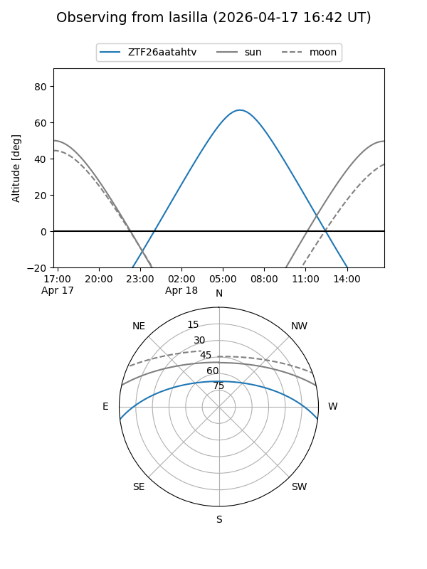
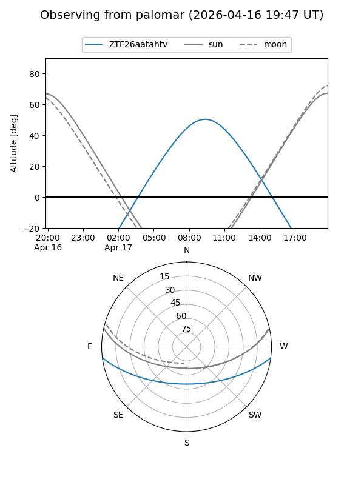

ZTF26aatahtv
Target ZTF26aatahtv at 2026-04-17 10:26
Aliases and brokers:
FINK: link
Lasair: link
ALeRCE: link
alt names
ZTF26aatahtv (ztf,fink_ztf)
Coordinates:
equatorial (ra, dec) = 228.8090,-6.11077
equatorial (HMS+DMS) = 15:15:14.17,-06:06:38.79
galactic (l, b) = (354.5854,+41.90073)
Flags:
Photometry:
last ztfg=17.14
1 ztfg detections
Lightcurve
Visibility


Additional plots